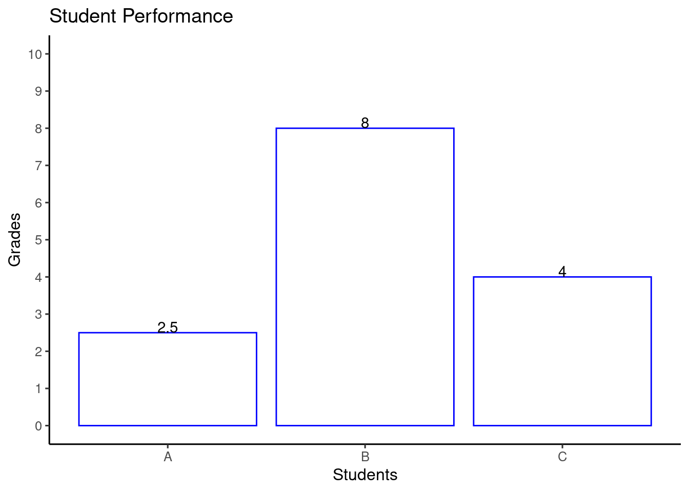

##Make vectors before, then tibble, then GGPLOT
library(tidyverse)── Attaching core tidyverse packages ──────────────────────── tidyverse 2.0.0 ──
✔ dplyr 1.1.0 ✔ readr 2.1.4
✔ forcats 1.0.0 ✔ stringr 1.5.0
✔ ggplot2 3.4.1 ✔ tibble 3.1.8
✔ lubridate 1.9.2 ✔ tidyr 1.3.0
✔ purrr 1.0.1
── Conflicts ────────────────────────────────────────── tidyverse_conflicts() ──
✖ dplyr::filter() masks stats::filter()
✖ dplyr::lag() masks stats::lag()
ℹ Use the ]8;;http://conflicted.r-lib.org/conflicted package]8;; to force all conflicts to become errorsgrades <- c(2.5, 8, 4)
students <- c("A" , "B", "C")
student_performance <- tibble(grades, students)
# alternate Syntax
student_performance2 <- tibble(
grades = c(2.5, 8, 4),
students =c("A","B","C")
)
#this has a Y limiter
ggplot(data=student_performance, aes(x=students, y=grades))+
geom_bar(stat= "identity", fill = "white" , color = "blue")+
scale_y_continuous(breaks = 0:10,limits = c(0,10))+
theme_classic(base_size = 12) +
geom_text(label = grades, position = position_dodge(width =.9) , vjust = .001)+
xlab("Students")+
ylab("Grades")+
ggtitle("Student Performance")